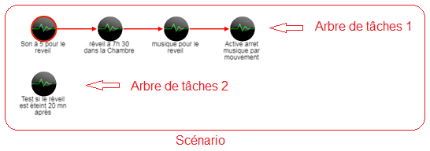
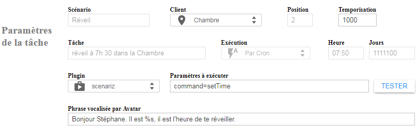
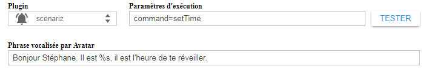

Comment fonctionne un scénario ?
Un scénario est constitué d'arbre(s) de tâche(s) à exécuter les unes après les autres dans un ordre séquentiel et à une heure donnée. Chaque tâche est définie par une série de paramètres et déclenche une action d'un plug-in A.V.A.T.A.R.

Les arbres de tâches
Un arbre de tâches est défini par l'heure d'exécution que vous choisissez pour la 1ere tâche de l'arbre.
Il n'y a aucune limite au nombre d'arbre de tâches dans un scénario.
Toutes les tâches suivantes dans cet arbre auront la même heure d'exécution, vous pouvez néanmoins définir une temporisation (en milli-secondes) entre chaque tâche de l'arbre si vous le désirez.
Prenons un exemple simple:
Supposons un réveil (comme l'image ci-dessus) qui exécute un série de tâches à une heure donnée, par exemple 7h30mn, puis une autre tâche 20 minutes après.
Il ne serait pas judicieux de créer une temporisation de 20 minutes après la dernière tâche de l'arbre 1 puisque les scénarios sont recherchés et exécutés toutes les 5 minutes. Idéalement, on crée un arbre 2 et on lui donne comme heure d'exécution 7h50mn
N'ayez crainte, toutes ces tâches font parties du même scénario, elles seront modifiées ensemble lorsque vous le modifierez vocalement par la règle "Gestion des programmes". Par exemple, si vous modifiez l'heure d'exécution d'un scénario et y ajouté vocalement 10 minutes, alors tous les arbres du scénario seront modifiés, ce qui deviendra pour l'arbre 1: 7h40m et pour l'arbre 2: 8h00mn, ou encore si vous le désactivez, le scénario complet sera désactivé.
A savoir:
La recherche et l'exécution automatique des scénarios est définie toutes les 5 minutes afin de ne pas trop surcharger l'application.
Scenariz tient compte des minutes entre les multiples de 5 et fait en sorte de les gérer:
- De 0 à 4, la minute d'exécution est ramenée au multiple précédent
- ex: 7h 34 minutes est ramené automatiquement à 7h30
- De 5 à 9, la minute d'exécution est ramenée au multiple suivant
- ex: 7h 36 minutes est amené automatiquement à 7h40
Par conséquent, il est préférable de définir des heures d'exécution avec des multiples de 5
Autre conséquence, le minimum de différence d'heure d’exécution entre chaque arbre d'un scénario est de 5 minutes.
Par exemple:
Arbre 1 => 7h30 Arbre 1=> 7h30
Arbre 2 => 7h35 Arbre 2=> 7h34
BON PAS BON
Les tâches
L'interface intelligente vous guide et suivant les cas de figures, les paramètres des tâches sont modifiables ou non.

Ci-dessous le tableau de tous les paramètres d'une tâche et leurs descriptions:
Paramètre |
Description |
Scénario |
Pour un scénario existant (non modifiable): Le nom du scénario ou Entrez un nom de scénario |
Client |
Liste tous les clients connectés à A.V.A.T.A.R Le client "Pièce courante" est associé à un capteur de présence et à l'activation des capteurs dans les paramètres du serveur, onglet "Interface", voir aussi la variable currentRoom dans la documentation de développement . La tâche sera alors exécutée dans la pièce courante lorsque celle-ci se déclenchera. Choisissez le client associé à la tâche courante et utilisé pour exécuter le plugin. |
Position |
Pour information, la position de la tâche dans l'arbre de tâches. Calculée automatiquement par l'application. |
Temporisation |
Une temporisation en milli-secondes pour exécuter la tâche suivante dans l'arbre de tâches. Par défaut, la temporisation est de 1000ms (1 seconde) |
Tâche |
Pour une tâche existante (non modifiable): Le nom de la tâche ou Pour une nouvelle tâche: Entrez un nom de tâche |
Exécution |
Par Cron: Ce scénario est exécuté automatiquement à l'heure et aux jours définis. Il peut être aussi exécuté directement par règle vocale. Par règle vocale: Ce scénario est exécuté seulement par règle vocale Info: Comment ajouter une règle vocale pour un scénario |
Heure |
L'heure d'exécution de la tâche au format HH:mm Toutes les tâches du même arbre de tâches ont la même heure d'exécution. Exemples:
|
Jours |
Les jours d'exécution du scénario. Toutes les tâches de tous les arbres de tâches du scénario ont les mêmes jours d'exécution. Format: 7 chiffres (1 ou 0) pour une semaine, du lundi au dimanche: 1: actif 0: inactif Exemples: Scénario exécuté les jours de travail (du lundi au vendredi) : 1111100 Scénario exécuté le lundi, le mercredi et le samedi : 1010010 Par défaut, les jours d'exécution sont pour toutes la semaine: 1111111 |
Plugin |
Liste tous les plugins activés et désactivés d'A.V.A.T.A.R Icône associé à un plugin activé : Icône associé à un plugin désactivé : Choisissez le plugin exécuté par la tâche courante. Attention ! Choisir un plugin désactivé ne fonctionne que si le plugin sera réactivé lorsque la tâche sera exécutée. |
Paramètres d'exécution |
Les paramètres à envoyer au plugin. Retrouvez ces paramètres dans le fichier js du plugin et pour l'action que vous voulez exécuter. Format: Des paires paramètre=value séparées par un tilde (~) Exemple: Un plugin à plusieurs actions et un séparateur d'actions data.command dans la fonction exports.action de son fichier js et un 2ème paramètre nécessaire data.value:
Laisser le champ vide pour plugin qui ne nécessite aucune action et qui est exécuté directement. Vous disposez d'un bouton "TEST" pour tester le plugin et vos paramètres d'exécution et vérifier dans la console d'A.V.A.TA.R d’éventuelles erreurs. |
Phrase vocalisée par Avatar |
Vous pouvez ajouter une phrase qui sera vocalisée par A.V.A.T.A.R après avoir exécuter l'action. Le séparateur @@:Découpe le texte en plusieurs. Le séparateur @@ permet de faire vocaliser votre textes par A.V.A.TA.R en plusieurs phrases pour que la diction soit plus normale. Utiliser alors @@ pour séparer les phrases, généralement après un point. Exemple:
Le caractère %s:Il existe un caractère de remplacement %s si le plugin retourne une valeur à inclure dans la phrase. Exemple 1: Supposons que vous voulez une phrase dans un réveil:
ou <heure> est à remplacer par l'heure courante. Une fonction est déjà créée pour l'usage: La fonction setTime du module scenariz qui retourne l'heure courante. Il suffira donc d'ajouter une tâche comme ceci:  Exemple 2: Supposons maintenant que vous voulez ajouter une autre valeur vocalisée par un de vos plugin, le callback (obligatoire) généralement ajouté en fin de la fonction exports.action de votre plugin devra alors retourner cette valeur comme ceci:
Ajoutez ensuite dans la tâche, votre phrase à vocaliser avec un %s là où la valeur sera dite: Attention: Si il y a plusieurs actions dans votre plugin, séparez les callback() des autres actions de votre plugin de celui qui retourne une valeur: Si ma fonction qui retourne ma valeur est 'setValue' alors je précise en fin de exports.action: if (data.action.command != 'setValue') callback(); Et je passe le callback() comme argument à ma fonction pour pouvoir l'exécuter dans mon tableau de commandes: var tblCommand = { 'setValue' : function() {setValue(callback);return}, ...... ........ }; Et dans ma fonction 'setValue': var setValue = function (callback) { /* Do stuff ......... var value = ............ ; */ callback({'tts': value}); } Retrouvez le même exemple dans le fichier scenariz.js et la fonction setTime |

Créé avec HelpNDoc Personal Edition: Générateur complet de livres électroniques ePub